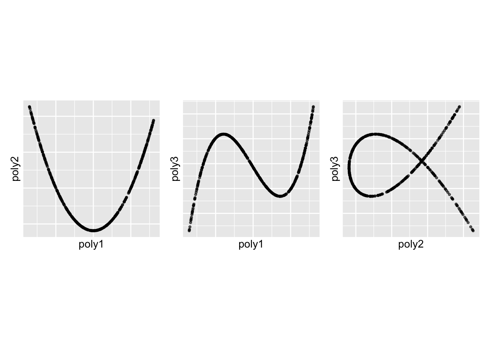

olive_data <- rescale(olive[, 3:10])
olive_col <- olive$regionUsing the skinny index with jellyfish optimisation
The skinny() index is a scagnostic index computed from the cassowaryr package. It measures how thin and narrow a projected shape is. This vignette illustrates the use of skinny() in a guided tour with jellyfish optimisation.
Two examples are presented. The first uses the olive dataset included in tourr. The second uses a synthetic dataset generated with spinebil, where the first three columns contain polynomial structure and the last two columns contain pure noise. This setup allows an assessment of whether the skinny index, together with jellyfish optimisation, moves toward structured skinny projections rather than noise.
Example 1: olive data
The olive dataset included in tourr is used here. The first two columns identify the sampling region and area, and the remaining columns contain fatty acid measurements.
The skinny() index is used as the projection pursuit index, and search_jellyfish is used as the search method.
animate_xy(
olive_data,
guided_tour(
skinny(),
search_f = search_jellyfish
),
col = olive_col
)The skinny index favours projections in which the projected point cloud appears thin and narrow. Jellyfish optimisation searches across multiple candidate bases and moves toward projections with higher skinny values.
Example 2: synthetic skinny structure with noise
In this example, the first three variables contain polynomial structure generated with spinebil, and the last two variables are independent Gaussian noise. Polynomial terms of degree 1 to 3 provide a useful example of skinny structure, because they can produce narrow and elongated relationships when projected into two dimensions.
n <- 500
degree <- 3
poly_x <- data_gen(
type = "polynomial",
n = n,
degree = degree,
seed = 436
)
poly_x <- poly_x + matrix(
rnorm(n * degree, sd = 0.001),
nrow = n,
ncol = degree
)
noise_x <- cbind(
rnorm(n),
rnorm(n)
)
my_data <- cbind(poly_x, noise_x)
colnames(my_data) <- c("poly1", "poly2", "poly3", "noise1", "noise2")
my_data <- as.data.frame(my_data)The relationships among the first three structured variables can be inspected directly.
p12 <- ggplot(my_data, aes(x = poly1, y = poly2)) +
geom_point(alpha = 0.6, size = 0.8) +
labs(x = "poly1", y = "poly2") +
theme(aspect.ratio = 1,
axis.text = ggplot2::element_blank(),
axis.ticks = ggplot2::element_blank())
p13 <- ggplot(my_data, aes(x = poly1, y = poly3)) +
geom_point(alpha = 0.6, size = 0.8) +
labs(x = "poly1", y = "poly3") +
theme(aspect.ratio = 1,
axis.text = ggplot2::element_blank(),
axis.ticks = ggplot2::element_blank())
p23 <- ggplot(my_data, aes(x = poly2, y = poly3)) +
geom_point(alpha = 0.6, size = 0.8) +
labs(x = "poly2", y = "poly3") +
theme(aspect.ratio = 1,
axis.text = ggplot2::element_blank(),
axis.ticks = ggplot2::element_blank())
p12 + p13 + p23
The skinny index is then applied with jellyfish optimisation.
animate_xy(
my_data,
guided_tour(
skinny(),
search_f = search_jellyfish
)
)In this synthetic example, it can be examined whether the guided tour, using the skinny index and jellyfish optimisation, moves toward projections that emphasise the structured polynomial variables rather than the noise variables.